[学校上网系列]6.从下载软件中想到的：哎妈呀防不胜防啊
文章目录
在本系列开了九个月之后，我终于找到机会把这个坑填了，真是不容易啊，想要养肥再看的小伙伴们可以来看了。
上一篇中，咱讲了一些密码的问题，咱得说这一篇算得上是开博以来耗时最久、行文最长的博文了。好吧，作为结尾的博文，一定是有大大的坑的，再加上这话题也没啥可以说的，所以就当是我出来刷刷存在感好，别有啥期待！
怎样安全的下载软件
大多数Windows用户在想要使用某款软件的时候，可能会经历这样的步骤：打开百度啊什么的搜索引擎，搜索该软件的名称，从广告中找到真正的网站，再从广告中找到真正的下载链接，然后等待下载完成、双击安装或者是运行。
那么在这一个过程中 存在哪些安全问题呢？咱就不说下载到XXX下载器、戳到假的网站这种低级问题了。
通常来说，一般稍有安全意识的人都会意识到去官网下载软件，有些人可能还会知道校验数字签名、校验散列值，但是这些就一定天衣无缝了吗？当然不是了，防御需要天衣无缝，攻击只需要攻破一点。
在官网下载就一定安全吗
来说一说刚刚发生的事情吧！前天，我给室友下载Foxit阅读器的时候（很明显我是去官网下载的啦），顺手按了下Ctrl + J，发现下载链接竟然变成这个样子（为了防止个人信息泄漏，我把那个IP涂掉了）：
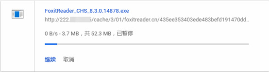
瞬间觉得有点不对劲。于是按F12打开开发者模式，重新刷新看看是怎么响应的，真是懒得抓包，哈哈：
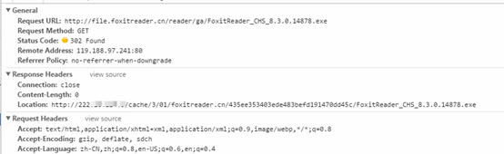
很明显，当我在官网点击"下载"按钮时，我的浏览器所收到的请求中意外的包含了Headers，Headers的内容是302重定向到222这个IP，之后我的浏览器就去下载新的location中的文件了。
我可真是预言家。这不，vlc和几个信息安全研究者因为这事怼起来了
那这个IP是个啥呢？
据我推断，此IP应该是我学校（或者说是教育网吧）的一个缓存服务器，它把一部分资源缓存到自己的服务器上，这样我们访问速度就比较快，不用从原始链接下载了，有一点点像"透明代理"的味道。
那么这样做有何问题呢？
问题其实还是有一些的，假如有人黑了这台服务器（或者管理员想赚外快），把缓存的资源加上了后门木马或者是替换成其他的东西，那么透过这个缓存下载并使用的用户不就遭殃了吗？别忘了咱可是从官网下载的呀，但风险等级还是提高了啊。
几年前我有一次下载什么玩意，就被劫持成了瑞星的在线安装程序，幸亏我发现图标有点不对劲，右键看了下签名，哈哈哈。
为啥原始地址的下载会被替换成这个链接呀？
请大家戳一下上面的开发者工具的图，我们可以看到，Foxit返回给我们的是一个HTTP的响应，既然是HTTP的，那就是可以被劫持被篡改被阻断的，所以自然是被加了个header location到缓存服务器了。
等等，foxit官网是https的呀？
观察真仔细，没错，foxit官网是https的，但是给出的这个链接却是http的，这能有什么办法？假如某个软件的官网是http的，那更是网页都可能被劫持成人见人爱花见花开的某网站。
等等，我这个官网全都是https的，没有http
忘记了Linux Mint官网被黑，ISO被加入后门的事情了？还有……
下载工具被投毒
噢，大家搜索下"迅雷 投毒"就知道了，顺便看看xcodeGhost
所以，总结：在官网下载软件就一定安全吗？不一定，在官网不是https的情况下，你看到的官网未必是真正的官网，下载到的软件未必是原始的软件；在官网是https的情况下，也不排除出站链接为http、被黑、黑心下载工具搞了的情况。
校验证书
在windows中，一些比较知名的开发者（组织）开发的软件，都会给自己的程序加入一个数字证书，这样当软件被篡改的时候，操作系统就会给警告，比如说下面这个就是大名鼎鼎的小狐狸的证书，这就能说明这软件是纯正的、原汁原味的！
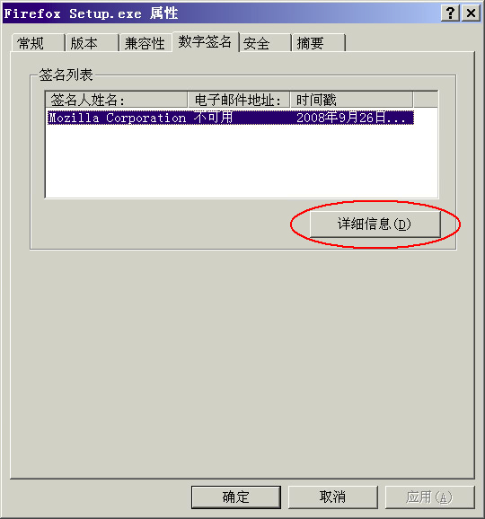
（图片盗自编程随想）
数字证书的原理是啥呐？非常简单的理解，就是把RSA反过来用。反过来用是啥呢？咱正常用RSA，都是用公钥加密、私钥解密，反过来就是用私钥加密、公钥解密，这样乍一看虽说是失去了"加密"这一保密性需求，但是鉴于私钥只有开发者持有，这也就能够在某种程度上证明这是从开发者手中释出的软件。当然啦，现实生活中的数字签名还要涉及到散列函数、PKI等复杂的方法体系，咱这里就不说了。
可但是，但可是，校验数字签名就一定安全了吗？不一定。
原因之一：有一些软件本身就不带有数字签名，这就没办法了；
可能是因为开发者比较穷，实施比较麻烦，代码签名证书一般来说要一笔钱呢，这可和SSL证书不一样噢。
原因之二：并不是所有文件都带有数字签名、程序未必会校验所有的文件。
此话怎讲？
大家可能用过一款由台湾人开发的非常有名的Windows下的编辑器：Notepad++，简直是神器啊，当初我看着那群人用着记事本写着Java而我享受着代码高亮和自动补全，哇塞！在今年3月维基解密爆光的CIA Vault 7中， Notepad++就中招了。是咋中招的呢？是这样的，Notepad++需要加载一个名为scilexer.dll的库文件，而Notepad++没有对这个dll进行校验，所以如果这个dll被替换成恶意的dll，那这不就完蛋了嘛。
大家想知道Notepad++官网是怎么说的吗？感觉他们要被气炸了，官方能说出来f-word，真的是很气。
Just like knowing the lock is useless for people who are willing to go into my house, I still shut the door and lock it every morning when I leave home. We are in a f**king corrupted world, unfortunately.
对在那些想进我房子的人来说，我家的锁显得毫无作用。虽然如此，但我每天早上离开家时，还是会锁上门。然不幸的是，我们生活在一个操蛋的堕落世界！
原因之三：你咋就那么相信你下载到的签名是正确的呢？
唉，其实还是第一个问题啊，假如你是从http网站上下载到的签名文件，那毫无疑问这个签名未必是原汁原味的……
Android的apk签名
Android的apk也是带有签名的，签名的目的就是保证每个应用程序开发商合法ID，防止部分开放商可能通过使用相同的包名来混淆替换已经安装的程序。简单的说，就是你把某个APP改了改，自己签名，再安装，你若不卸载原来的APP，你是安装不上你自己的版本的（用幸运破解器等破解了签名保护机制的不算）
Linux下校验签名
Linux下也是可以校验签名的，比如我们经常会在某些软件下载链接旁边看到一个sig按钮，下载之后是一个asc文件，这个asc文件就是用来校验签名的。nautilus直接双击，当同名文件（不包括扩展名）存在时，就会自动校验，否则会弹窗让你选择目标文件进行校验，或者选择用gpg2 –verify test.asc test.zip也可以校验。
使用nautilus与gpg2校验数字签名成功与失败的截图（失败是我给压缩包中的一个readme略作修改啦）
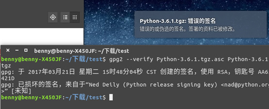
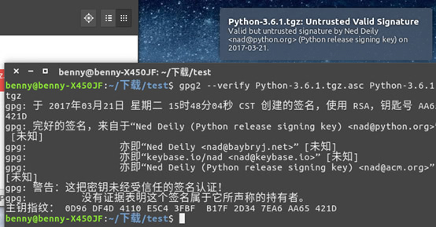
注意：咱可能得先用命令从keyserver导入公钥才可以，命令大致如下：
gpg2 --keyserver pool.sks-keyservers.net --search-keys AA65421D其中 pool.sks-keyservers.net可替换成pgp.mit.edu等，AA65421D是ID
校验散列值
在某些网站上 ，我们可能还会看到下载地址旁边给了个md5、sha1的散列值，这是方便我们校验的。假如我们的散列值和网站上给出的一样，那么这里的散列值就应该是完全一致的；如果不同，那么就意味着出问题啦。
那么这个过程中存在哪些漏洞呢？
单项散列函数可被碰撞
咱有人可能知道，几个月前的大新闻，Google成功碰撞SHA1，再就之前md5的碰撞。呐，我猜你懂了吧。
不安全呈现散列值的方法
某些网站呐，它在下载页面显示的散列值（尽管它的下载链接可能是https的或者是其他的能够保证文件完整性的下载方式），但是它的那个页面是http的，那就是说这个页面可能被篡改，那这散列值还有啥用嘛……
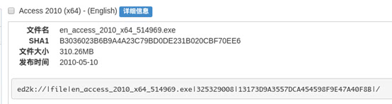
（msdn我告诉你中枪了。不过，咱可以去微软官网比对散列值，https的页面噢！）
上面说了这么多本来我们可能觉得天衣无缝的校验方式，其实都是存在一定程度的缺陷的。那可能有人想问了，这么罕见的、高级的攻击方式，可能不是经常存在的吧。没错，这种方式咱称之为APT（不是三磷酸腺苷，也不是Debian系的apt），遇到政府级别的攻击（由政府支持的攻击者，比如说NSA啦，嘿嘿嘿啦），那这是可能的。
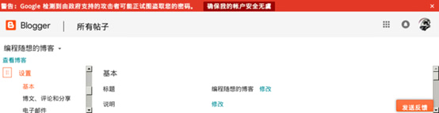
（图片来自编程随想）
那么说了这么多，咱究竟该如何安全的下载软件啊？
好吧，咱们都是一般人，那么时刻记得去官网下载、记得检查下载链接是否正常，尽可能的校验散列值、数字签名。尤其是对于（中国大陆）开发者来说，IDE什么的不去官网下载，不校验散列值和签名，那不就是在拿用户的隐私与安全开玩笑吗？不会翻墙，好意思说自己是程序员？
啥？你想去某某管家什么的下载软件？求别逗啊，看我藏恶意代码，看我捆绑
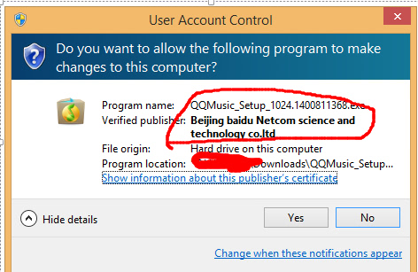
（百度：我们已经收购腾讯 叫你不取消勾选，图片来源知乎）
除了下载，更新也是个问题……
有很多软件啊，它更新的时候是通过http的，然后还不校验，那么就很容易被篡改。别说，真有个木马就是干这事了，比如说大名鼎鼎的黑暗幽灵木马（据推测，这家伙也应该是政府背景）。什么你还不信？这几天大火的NotPetya不就是利用了M.E Doc 更新不带数字签名么！
热更新
提到更新，我突然想起近期Apple全面封杀热更新，真的是可喜可贺的大好事啊！
热更新是个啥
App由两种更新方式，一种是在App Store内进行更新，更新时重新下载全部安装包；另一种就是热更新，用户只有在打开App时才会发现热更新包，更新时只需下载安装更新部分的代码，再次打开时即可，这样可以直接绕过苹果App Store的审核。简单的讲就是绕过App store的审核，打开App才会进行"应用内更新"。
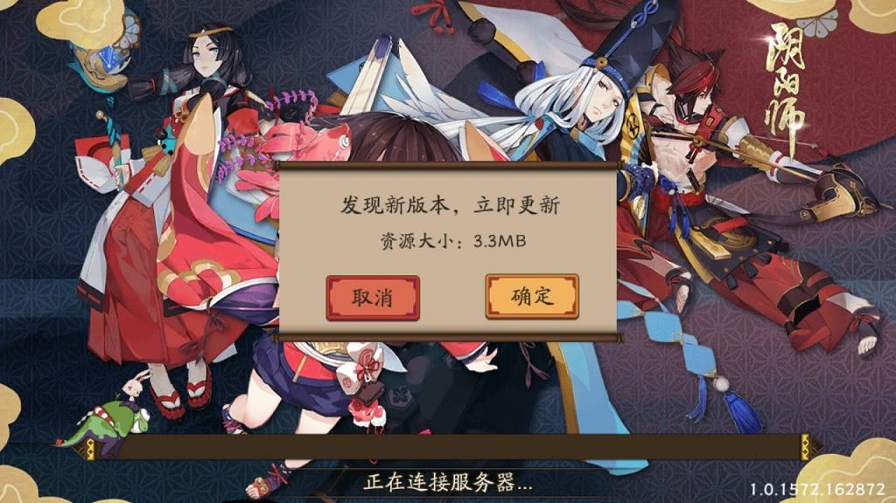
（阴阳师的热更新）
这样有啥不好呢
咱举个例子，好好的一个应用，可以瞬间变成看小黄图的应用；好好的一个应用，可以瞬间加上后门监控用户隐私；更可怕的是，万一有黑客作祟呢？咱知道，写代码未必都有很强的安全意识啊。
现在，手机中包含的隐私已经超越了人们的想象，只要给我一个人的手机，那么我就可以了解他的一切。
从库克叫板FBI、要求App内必须使用https、再到封杀热更新，肆意扩张的权力，是对自由最大的威胁。
其实Google的Play Store也是禁止热更新的，没看支付宝啥的没少被下架嘛。（你敢相信，你平时用的好多应用根本没在Play Store上架？）可是大陆这种地方，三不管，毕竟Android和安卓是不一样的……（是，就连推送系统都要自己搞了？你这轮子是方的五边形的啊，反正不会是莱洛三角形就对了）Google啊……Google啊，你咋就这么不管不顾我们这群处在水深火热的人呢啊，开始讨厌你了哦。
对，我必须要黑阿里，支付宝隐私事件、抢月饼、截图中加数字盲水印还有一大堆放屁的话，阿里的节操在银河系外，我一天不黑阿里我就不舒服。
说到这，似乎文章标题里的事情就说完了，似乎本文可以画上句号，但是……
程序员们的安全素质
其实我不是一名合格的程序员，我写这一段只是为了装逼的，逃
开发工具的获取
假如你是一名活在天朝的程序员，那么一定要记得去官网下载开发工具，然后校验证书或散列值。那个golang的开发者们……不会翻墙、不热爱翻墙、不想推墙，好意思说自己是搞IT的？反正我是不好意思。
如何存储用户的密码
明文存密码
在几年前，我做某个课程设计的时候，无数的人在实现登录的时候都将用户名和密码明文存入数据库中（包括我，我当时的安全意识很差）；咱学生，可能没太大安全意识，这一点可以理解，但是对于一个商业产品来说， 明文存密码？啥，不信，这就在我身边，看图。还有CSDN呢
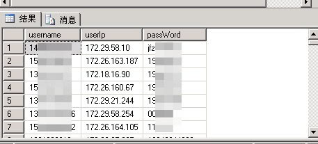
（遇到一个明文存密码的家伙，你还想怎么办？）
假如你是一名学生，需要做个狗屎一样的课设，还恰巧需要有类似登录的功能，请一定要注意，千万不可以明文存密码。我猜可能有人会反驳，这就是个课设，为啥要这么注意？嗯，那是因为啊，咱程序员就是要从细节做起，千里之堤毁于蚁穴啊。
自己实现加密（散列）算法
哎唷我说，你真是把自己当成天才能干翻全世界的密码学家吗？你就是密码学博博博博博博士也不行啊。无论何时请一定要记得，别想着自己造加密算法，别想着算法保密就能够保证机密性，隐蔽式安全是不可取的。想想DVD的加密算法是怎么被破解的就知道了。
hash一下存进去？
稍微有点安全意识的程序员可能会将用户的密码hash一次，或者n次，或者自作聪明的md5(sha1('test'))，然后放入数据库中，这都没啥太大的区别。很明显，散列一下要比明文存密码好一些，但是却依旧存在非常严重的安全隐患。为啥？哎呀，大部分散列函数算的都很快的，用户都是喜欢123456的，用户都是喜欢一个密码走天下的，彩虹表很方便的，撞库很容易的。
注意，之所以不推荐hash很多次以及混合hash，是因为密码学中有一个理论叫做"柯克霍夫原则"，拿到了你数据库，也基本上意味着会拿到源代码。
试试HMAC？
HMAC是个啥？其实挺复杂的，一句话可能说不完，但是简单说就是把AES和Hash结合起来，就是比如说用某个AES密钥加密了用户的密码，然后再hash一次再存入数据库中（当然这个说法太不准确了，实际上要比这复杂得多）。这样想要暴力破解是不太容易了，但是还是有问题呢，问题就是，假如某两个用户密码恰巧都是123456，那他们存的内容不就一样了吗？咱知道，用户都是喜欢123456的，黑客可以通过批量注册或者是根据算法批量生成大量弱口令的值，这样密码还是被破解出来啦。
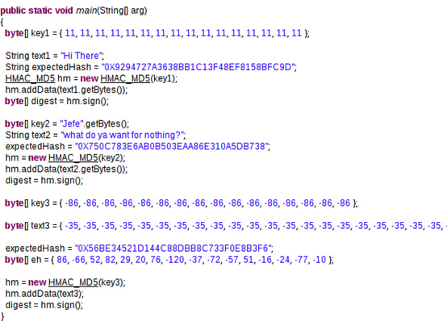
（HMAC在某个商业产品中的实现，从class文件反编译出来的。我受到了程序员的嘲讽）
我就知道你们还不信，那么请看图，此HMAC的散列值37e0c8f50a64a454对应的密码是000000，来看看多少用户的密码都是000000——2817人，此系统的总用户数接近3万。
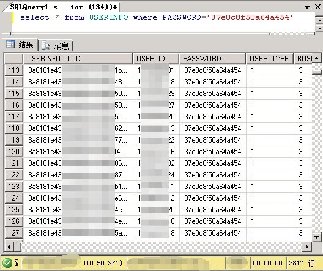
加个随机盐？
加盐是个啥？咱知道，用户都是喜欢12345的，但是假如我们在密码中加入一段随机的盐值，比如说ZVhWbENnPT0K然后再hash一下存入数据库中，那么这密码强度不就显著提高了嘛~对噢，盐别短，别重复。
请注意，test1和test2的密码都是弱口令123456，但是咱可以看到这存的东西完全不同嘛。
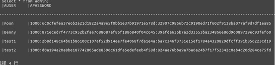
随机盐就够了吗……？不够
实现随机盐就够了吗？当然那不够了。我们考虑下如下的用来判断密码的伪代码(这里的这俩字符串，是散列值哦，不应该是明文密码哦～)
if('123456'=='111111') do something;else warning;我们重点看那两个字符串（把==写成=的就不要说啦嘻嘻）。大部分语言是怎么比较这字符串的呢？它们会从第一位开始比较，发现都是1，那么好，继续比，第二位一个是2一个是1，那就是不等了，那就是false吧。这其中有啥问题呢？
咱说，这其中，"第一位就不同"与"第二位才不同"是存在运算的时间差的。假如平均比较一位需要10ns，那么要进行攻击，我们先猜测第一位是1，如果返回false时间基本上小于10ns，那么意味着我们第一位猜测是错误的；如果返回false时间明显长于10ns，那么意味着至少我们第一位的猜测是正确的；以此类推，我们可以通过这个微妙的时间差来一位一位的猜解密码。听着很不可思议、觉得很变态是不？这可是大名鼎鼎的"边信道攻击（旁路攻击）"，更准确的说是时序攻击，已经有人实现了
那这可咋办啊！麻蛋啊，变态啊，简直了啊。好办，管他啥样的，应用慢比较算法都给固定时间返回就可以了。
再进一步……
咱知道大部分散列函数都很快，但是假如咱使用比较慢的散列函数呢？哎嘿嘿这是个好主意，比如说Dropbox用的bcrypt，嗯很好很棒。
哎呀，你快说这些技术都咋实现吧，我不会写啊！
PS，PHP7自带个password_hash，也很不错。但是好像很多人用Python啊，那咋办呢，没事，有一个很成熟的库叫做passlib，很完美。其他语言欢迎补充。
噢对，对于web应用来说，要记得在服务端hash，要记得HTTPS，要记得防范XSS和注入，要记得有一个清晰的逻辑思维别注册的时候就告诉用户你这个密码和某某某用户重复了……
如何验证输入：永远把你的用户当成坏人
也许产品经理会打死我？
好吧，假如我们设计一个登录界面，这样就需要构造一个SQL语句了，那么可能有些人是这样写的：
str="select * from admin where aUser='"+username+"'" and aPassword='"+password+"'";其中username和passowrd的用户需要输入的内容（变量），假如我们在username中填入' or '1'='1'--，SQL查询语句会变成下面这个样子
select * from admin where aUser='' or '1'='1'-- and aPassword=''实际上是这段（后面是注释）
select * from admin where aUser='' or '1'='1'这是一条恒等式，一定会查询出结果（结果集返回为真）并绕过验证。麻蛋，被注入了吧，还好是被注入了，不是被drop table了。要是jdbc这还好，毕竟分号没用……
那咋办呢？笨办法，把用户输入的or, –,';等关键字和特殊字符都过滤了，大不了抛出异常而已呗……或者用语言内建的安全机制（比如说JDBC的PreparedStatement就可以很大程度的防止SQL注入）
PS，在Web开发中，对于用户提交的表单也要过滤啊，要不被XSS的就不好玩了啊哈哈！（微信又中枪了）
客户端哈希还是服务端哈希

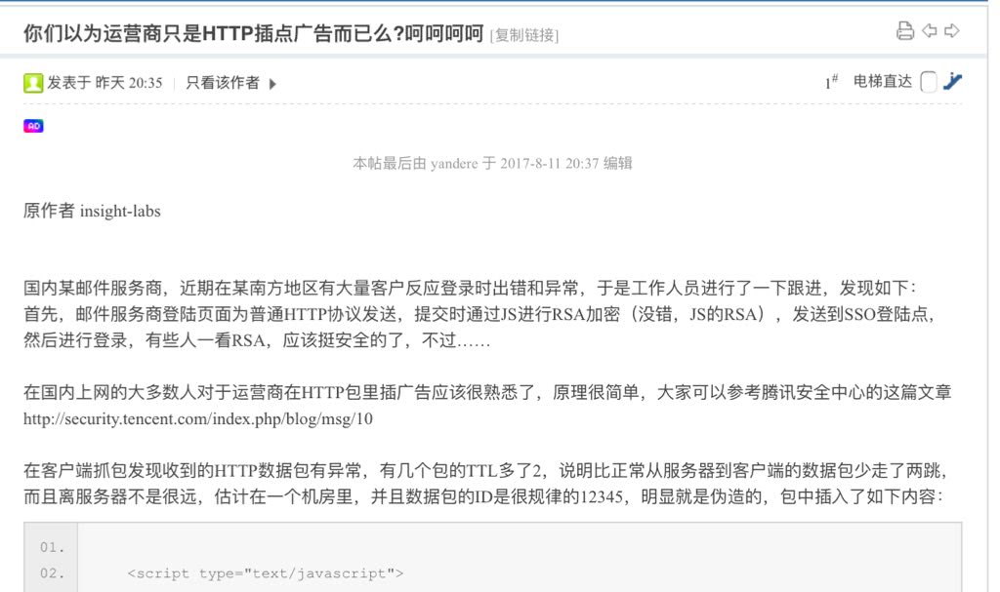
今晚（8月12日）看到一篇很搞笑的文章，就是说一个明文登录被ISP搞了。部分摘录如下：
这个程序员可以炒了，链接戳我
无论何时，一定要记得凡是涉及到登录的界面就要使用HTTPS，甚至毫不过分的说应该全站HTTPS。因为如果不是全站HTTPS，有些情况下登录那个按钮的A标签就是可以被篡改进而钓鱼或者降级的。
除了登录，也应该至少使用服务器哈希。也就是说服务端哈希、服务端+客户端哈希都是可以的，但是只有客户端哈希是不可以的，因为这样就会造成重放攻击。更详细的说，就是这样的：
只使用客户端哈希，非SSL
那么骇客就可以直接截获到这个哈希，那么他只要把这个哈希值发送给服务器，他就能够被授权登录，可实际上他并不知道用户的密码，这就是所谓的重放攻击；
只使用客户端哈希，SSL
很显然骇客拿到哈希的机率就很低了；但是假如服务器的数据库被脱下来了，那么还是一样的道理，只要发送哈希给服务器，就能够被授权登录，照样被重放攻击。
想要加个序号、时间戳、随机数什么的防止重放攻击？只要明文就是扯淡……被脱库照样完蛋。
在这种情况下被重放攻击的根本原因是，服务器太过于相信客户端，服务器认为客户端发出的请求都是经过正常的应用逻辑的，服务器把客户端发过来的哈希值直接存入数据库。
至少使用服务端哈希、非SSL
不说啥了，MITM即可。
至少使用服务端哈希，SSL
这种情况下，哪怕黑客拿到数据库，也只能玩彩虹表了；如果程序员安全意识比较强，用了随机盐，那就更不好破解了。
总结一句话就是，不带SSL就是耍流氓，至少要使用服务端哈希。（客户端用JS搞个RSA，大哥，你是来搞笑的吗？这和客户端哈希没有任何本质上的区别，照样重放）
好吧，关于程序员的安全素质，我目前就能想到这几点。
1984与双重思想
请先看一遍下面这个图（凤凰网在911十周年的街头采访视频），图片偷自编程随想
如果你不觉得这个人脑袋有问题、不觉得有矛盾，那么恭喜，你多半已经被朝廷改造成双重思想了。
双重思想（doublethink）来自于乔治·奥威尔的1984，简单说就是同时接受两种互相矛盾的、抵触的思想信念却不觉得矛盾。
对真理部记录司的雇员们来说，双想意味着可以歪曲史实，然后对他们刚写下的新历史坚信不移。双重思想不仅仅可以用来洗脑民众，还可以用来洗脑体制的维护者，而且效果贼好！
结语
好吧，历时九个月，我终于把这一系列的坑填完了，感谢当时鼓励我开这一系列的某同学，感谢鼓励我的某学长，当然更要感谢给了我无数灵感的某童鞋！我们下个系列再见???
最后，请允许我用著名文学家小罗伯特·土而奇·豆斯基的一句话来结束本文吧：
黄色的道路上分出了两条路，我选择了绕远的那条路，是因为我知道哪怕有万分之一遇见你的机会也是值得的。
本站默认采用CC-BY-NC-SA 4.0协议进行授权 转载必须包含本声明，并以超链接形式注明原作者和本文原始地址

评论
25 条评论